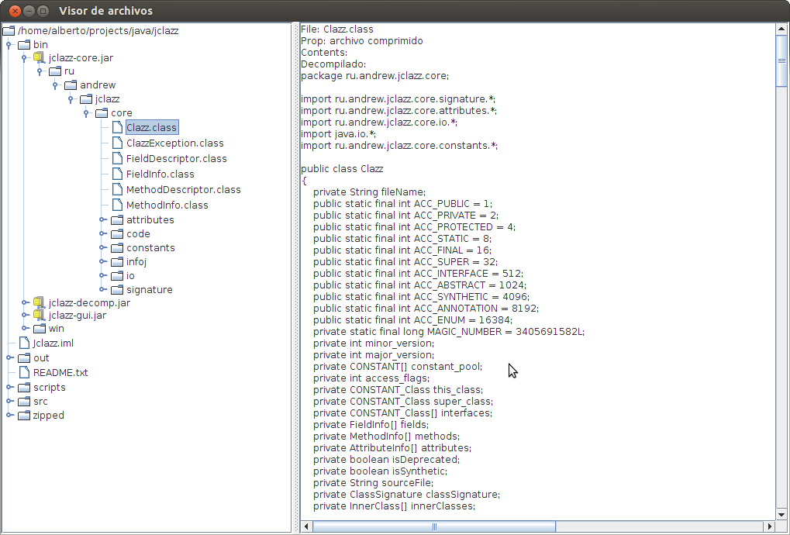

jclazz-gui
GUI for the promissing java decompiler jclazz
by now it is a bizarre mixture of little snippets of code from here and there, but it works
Just needs a couple of things: Truly maven project, test for the problems and improvements and use better swing components and layouts.
How does it look like?: Take a snapshot

You can use the new sandbox to try whatever code you like.
- With compilation path you can define output directory for class
- With class name define the name for compiled class (should be the same as public class
In compilation tab you can see any problems compiling the code
Meanwhile I choose the right swing components, I will use the external app meld for comparing sanbox and decompiled output. You have a contextual action on sanbox for that.
I have incorporate the formely tree to inspect internals of a class.